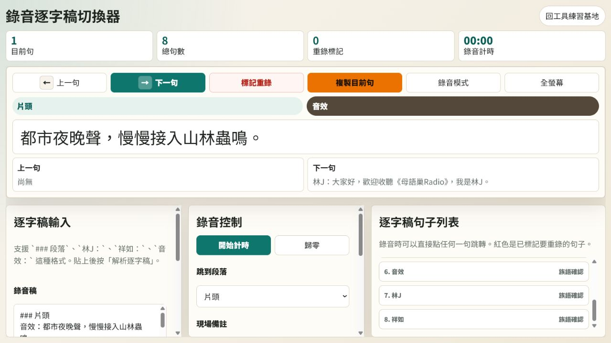

先解決課堂裡真正麻煩的事
詞卡要能列印、講稿要能在錄音現場快速切換、報表要少一點重複整理。Calumai 從這些具體需求開始，把每一次練習留下來。
- 6
- 個工具已完成並上線
- 教材、錄音、課務
- 從教學現場出發的使用情境
- 持續更新
- 每次完成都留下可使用的成果
現在就能使用的工具
不是概念展示。每一個工具都可以直接開啟、輸入內容並完成一項教學工作。
教材製作
南勢阿美語詞卡產生器
匯入學習詞表，篩選主題與級別，產生可編輯、可列印的課堂詞卡。
工具怎麼被做出來
Calumai 不自動編造族語內容。內容由老師決定，工具負責把操作變簡單。
從真實工作開始
先問今天要解決哪一件事，再決定要做什麼功能。
每一項開發都對應一個使用場景，例如列印詞卡、錄音提詞或整理課程截圖。
保留老師的判斷
族語、翻譯、例句與分類都可以編輯，AI 不替教學者做文化與語言決定。
完成才算一次練習
能開啟、能操作、能在手機上使用，並留下下一次可以接著改的紀錄。
最新文章
從一張詞卡開始，把族語教材做成真正能上課的工具
這篇文章記錄詞卡產生器怎麼從欄位整理、篩選，到最後能夠直接列印。
閱讀文章